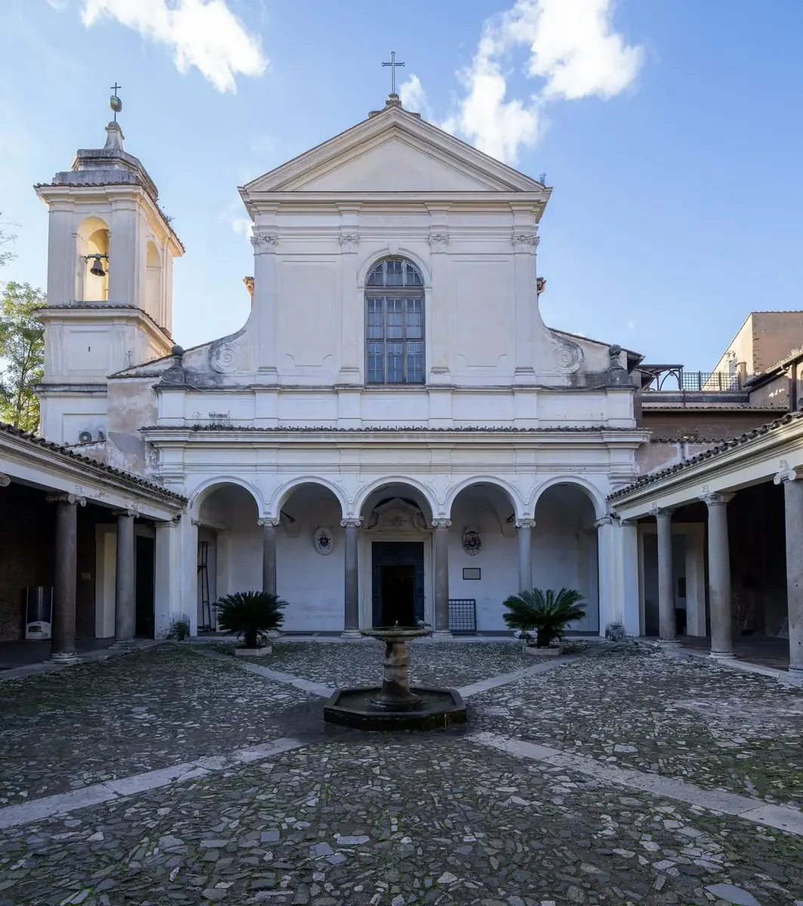
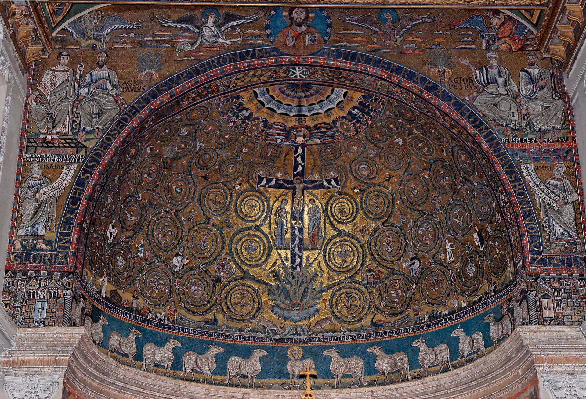
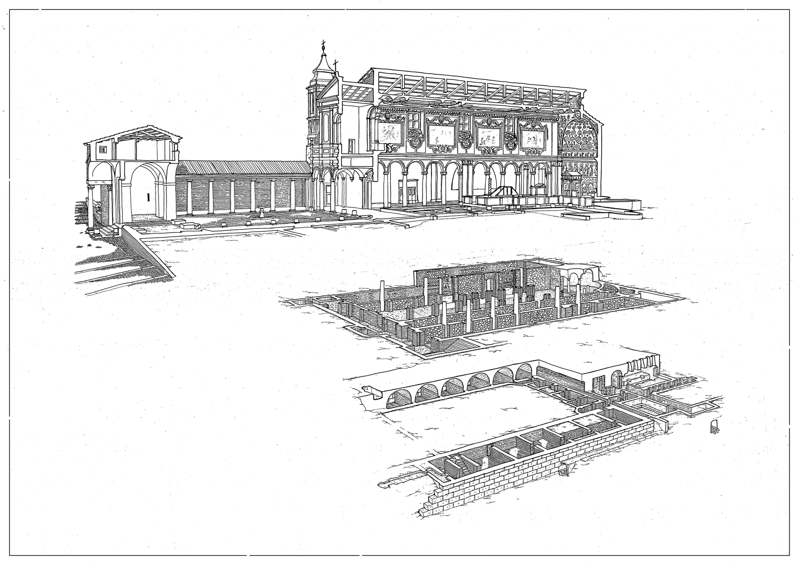
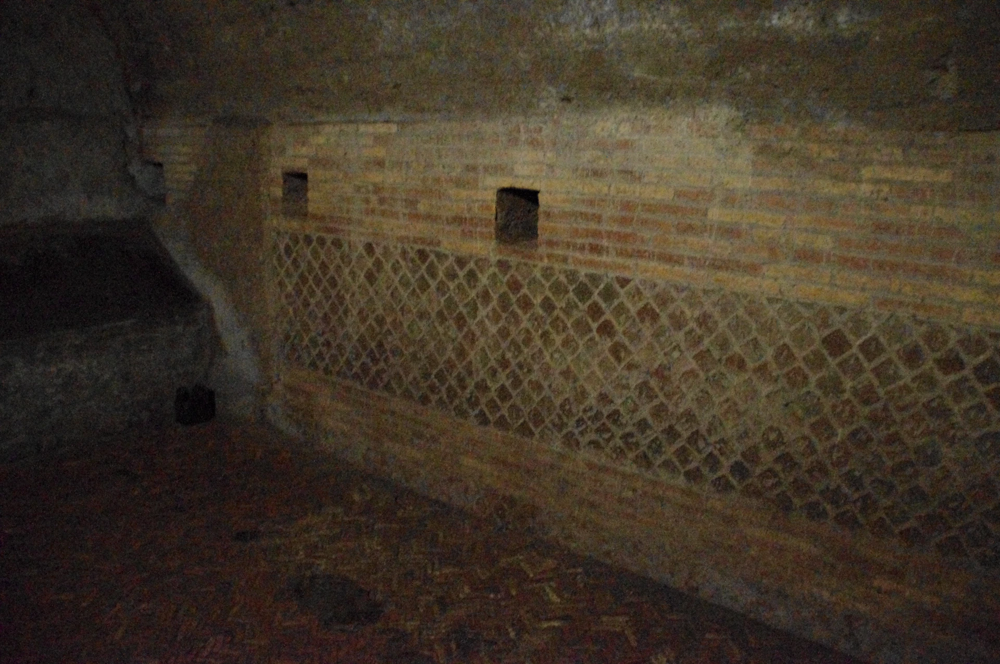
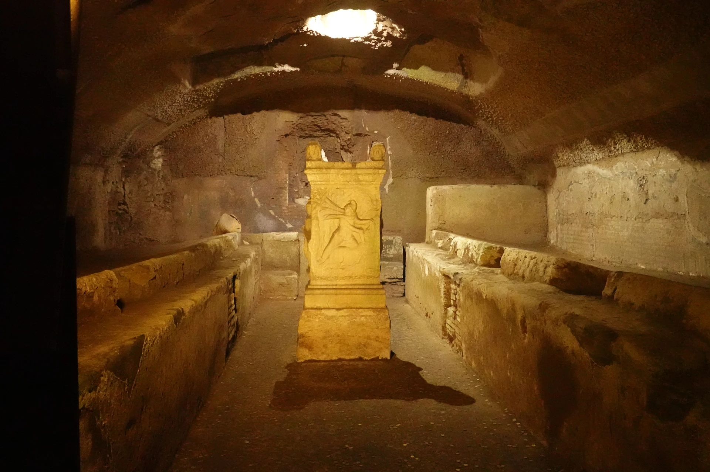
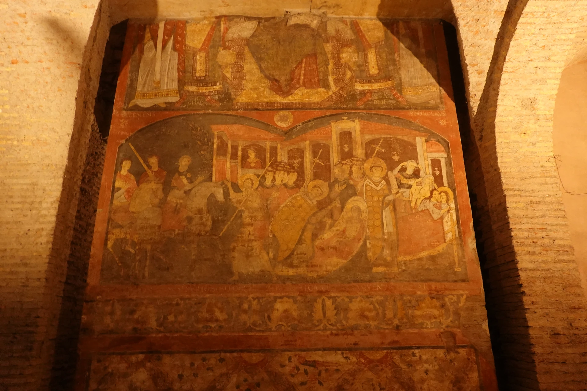
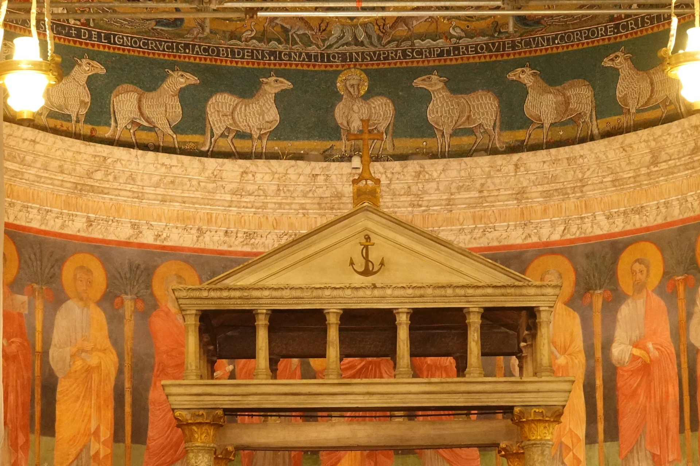
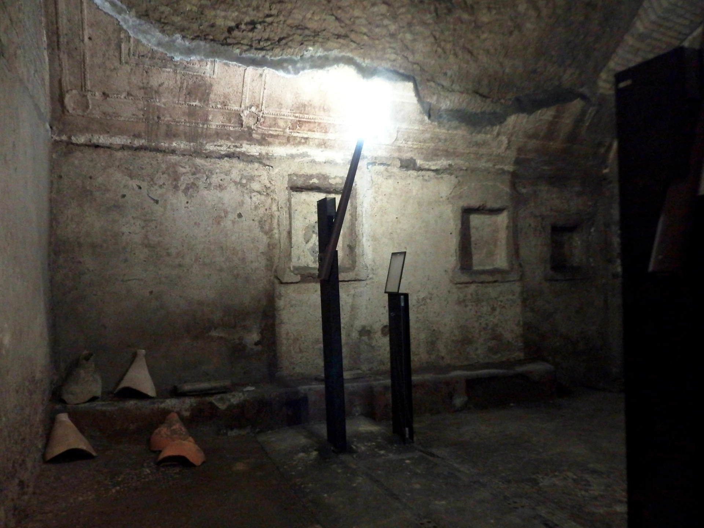
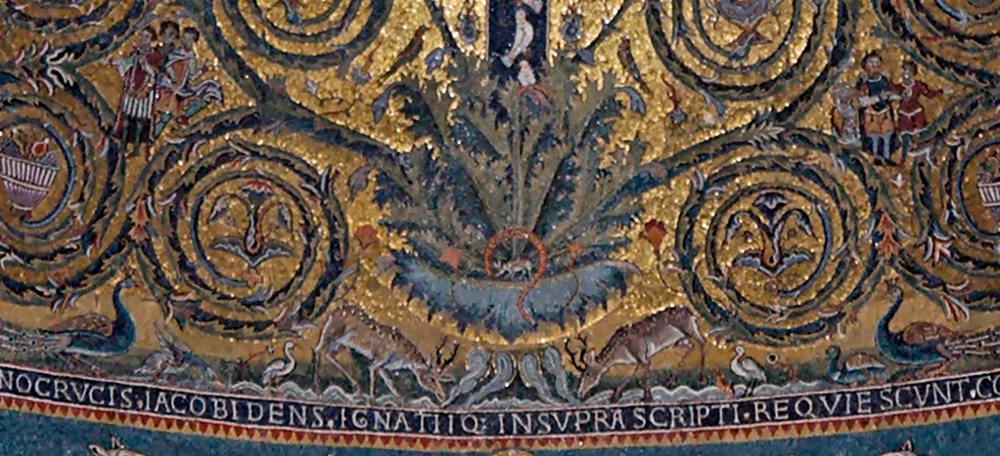

아직 펼치지 않은 카드땅 아래와 하늘 위 · 2산 클레멘테 성당겉으로는 평범한 성당인데, 계단을 내려갈수록 더 오래된 시간이 나와요. 맨 아래에는 무엇이 있을까요?계단을 내려가면 더 옛날 교회가 나온대! 맨 아래엔 뭐가 있을까?
1세기 → 12세기 · 1857년이탈리아 로마 · 콜로세움 동쪽
산 클레멘테 성당
로마 산 클레멘테 성당은 한 자리에 여러 때가 층층이 쌓인 곳이에요. 1857년, 한 신부가 성당 바닥 아래 흙을 파 내려가 통째로 묻혀 있던 옛 성당을 찾았어요. 시간 막대를 밀어, 이 자리에 시대가 한 층씩 쌓인 차례를 따라가 보세요.
성당 밑에 더 옛날 성당이, 그 밑에 더더 옛날 건물이 있대. 시간 막대를 밀면 한 층씩 쌓여!
검수 전 시안이에요(기준서 2판 · 초벌). 장면에는 기록에 있는 것만 옮겼고, 전해지는 이야기는 그렇다고 밝혔어요. 상상은 ‘눈 감고 상상해 보기’에만 썼어요.
시안 확인용카드 단계 미리 보기
1
맨 위, 12세기 모자이크
성당에 들어서면 정면의 반원 벽, 곧 앱스가 금빛으로 빛나요. 12세기에 작은 돌과 유리 조각을 붙여 만든 모자이크예요.
가운데 십자가에 흰 비둘기 열두 마리가 앉아 있어요. 십자가 밑동에서 덩굴이 자라 나와, 벽 전체를 둥근 소용돌이로 채워요.
덩굴 아래를 지나는 글줄은 이렇게 말해요.

“그리스도의 교회를 이 포도나무에 견주리라. 율법은 말라 버리게 했으나, 십자가는 푸르게 하네.”
앱스 모자이크의 글줄(12세기) · 뮬룰리(1873)가 옮겨 적은 라틴어에서 이 안내서가 옮김
같은 글줄 가운데에는, 십자가 나무 조각과 사도 야고보의 이, 그리고 안티오키아의 주교이자 순교자 이냐시오의 유해가 위에 그린 그리스도의 몸 안에 쉬고 있다고 적혀 있어요. 유해는 성인의 뼈나 몸의 일부를 말해요.
맨 아래를 보면, 십자가 밑동에서 물이 흘러나오고 사슴들이 그 물을 마셔요.
그런데 이 모든 것이 서 있는 바닥 아래에, 더 오래된 시간이 묻혀 있어요.
십자가에서 덩굴이 자라서 벽을 가득 채웠어! 맨 아래에서는 사슴이 물을 마셔.
물어보기사슴들은 어디서 흘러나온 물을 마시고 있을까?
2
1857년, 벽 너머
1848년, 이 성당의 아일랜드 도미니코회 수도자 조지프 뮬룰리 신부는 의심이 들었어요. 4~6세기 기록에 나오는 클레멘스의 교회가 지금 성당일 리 없다고요.
이 동네의 옛 지형과, 성가대석(노래하는 사람들이 서는 자리)의 대리석을 꼼꼼히 살펴본 끝에, 그는 옛 교회가 지금 성당 아래나 가까이에 있다고 보았어요.
그해 로마에 혁명이 일어나 파 보는 일은 미뤄졌어요. 1857년, 그는 마침내 옛 벽이 남은 방을 지나 둥근 천장 방의 벽에 구멍을 냈어요.

“흙을 14피트 깊이까지 걷어 내자, 제자리에 똑바로 서 있는 기둥 셋과 벽화 조각들이 나왔다.”
조지프 뮬룰리, 『성 클레멘스, 교황이자 순교자, 그리고 로마의 그의 바실리카』(1873) · 이 안내서가 옮김
14피트는 4미터 남짓이에요. 1857년 9월, 옛 성당이 정말 이 아래에 있다는 것이 드러났어요. 옛 성당은 흙과 돌 부스러기에 통째로 묻혀 있었어요. 12세기 사람들이 일부러 메워 새 성당의 기초로 삼았거든요.
그 흙이 15만 수레가 넘었고, 모두 바구니에 담아 어깨로 날라 올렸다고 뮬룰리는 적었어요.
위 그림은 이 자리의 세 층을 떼어 위아래로 벌려 그린 거예요. 맨 위가 지금 성당, 가운데가 4세기 성당의 터, 맨 아래가 1세기 건물들이에요.
1857년, 흙 속에서 옛 성당의 기둥이 나왔어요. 뮬룰리 신부라면 다음에 무엇부터 할까요?
신부님이 벽에 구멍을 뚫고 흙을 퍼냈더니, 땅속에서 옛날 성당 기둥이 똑바로 서 있었어!
물어보기흙을 바구니로 날랐대. 바구니로 몇 번이나 날랐을까?
3
한 자리, 네 때
이 자리에서는 시대마다 옛 건물을 흙과 부스러기로 메우고, 그 위에 새로 지었어요. 그래서 땅이 점점 높아졌어요.
1세기의 길바닥은 지금보다 20미터쯤 아래에 있었어요.
시간 막대를 오른쪽으로 밀거나 해를 눌러, 맨 아래층부터 한 층씩 쌓아 올려 보세요. 사진은 층마다 다른 곳에서 찍었어요.




1세기 · 맨 아래층 공공건물 안쪽의 벽과 바닥 — 조폐소 일터로 보는 학자도 있어요 · 사진: Ice Boy Tell · CC BY 3.0 · 위키미디어 공용2세기 끝 · 벽돌집 땅속의 미트라 신전 — 가운데 제단 앞면에 황소를 잡는 미트라가 새겨져 있어요 · 사진: Edelmauswaldgeist · 퍼블릭 도메인 · 위키미디어 공용400년 무렵 · 아래 성당의 11세기 벽화(성 알렉시오 이야기) — 위 칸은 12세기 새 바닥을 놓을 때 윗부분이 부서졌어요 · 사진: Edelmauswaldgeist · 퍼블릭 도메인 · 위키미디어 공용12세기 · 위층 성당의 앱스 아래쪽 — 모자이크의 양 떼와 글줄, 꼭대기에 닻이 붙은 제단 덮개(2019년 사진) · 사진: Edelmauswaldgeist · 퍼블릭 도메인 · 위키미디어 공용 · 양옆을 조금 잘라 씀
네 때를 다 지나왔어요. 1세기 길바닥은 지금보다 20미터쯤 아래에 있어요. 그 사이를 사람들이 메우고 또 지었어요.
뮬룰리와 일꾼들은 이 차례를 거꾸로 되짚었어요. 맨 위에서부터 흙을 걷어 내며 내려간 거예요. 발굴은 1870년까지 이어졌고, ‘그리스도교 고고학의 아버지’라 불리는 조반니 바티스타 데 로시가 도왔어요. 고고학은 땅속에 남은 옛 흔적을 연구하는 학문이에요.
옛날 건물 위에 흙을 덮고 또 짓고, 또 짓고! 막대를 밀어 봐.
물어보기맨 아래층은 얼마나 오래전 것일까?
4
맨 아래의 물
맨 아래층까지 내려가면 어디선가 물소리가 들려요.
1873년, 뮬룰리는 이 층의 방들이 맑은 물로 차 있다고 적었어요. 1867년에 찾은 미트라 신전도 물이 쉬지 않고 흘러들어 더는 파 볼 수 없었어요.
1912년부터 1914년까지 루이스 놀런 신부가 이 성당에서 콜로세움 쪽으로 물을 빼는 굴을 팠어요.

물이 빠지자 더 아래가 드러났어요. 64년 네로 황제 때 큰불에 무너진 건물들이었어요.
성당 공식 누리집은 지금도 공공건물의 기초 둘레로 ‘옛 로마의 잃어버린 물’이 흐른다고 소개해요.
맨 아래층에는 물이 가득했대. 신부님이 굴을 파서 물을 빼냈어!
물어보기땅속 깊은 곳에서 물소리가 들리면 어떤 느낌일까?
5
다시 맨 위로
다시 맨 위층, 처음 본 모자이크 앞이에요.
십자가 밑동의 잎 덤불 아래로 물이 네 줄기 흘러나와요. 사슴 두 마리가 양쪽에서 고개를 숙여 그 물을 마셔요.
뮬룰리는 이 네 줄기를 낙원에 흐르던 네 강으로 읽었어요.

그림 속 물은 맨 위에서 흐르고, 진짜 물은 맨 아래에서 흘러요.
사슴들은 오늘도 고개를 숙이고 있어요. 그 아래 아주 깊은 곳에서, 물소리가 들려요.
처음 본 그림이야! 사슴 두 마리가 물을 마시고 있어. 그 아래 땅속에선 진짜 물이 흘러.
물어보기그림 속 물과 땅속 물, 둘 다 들어 보고 싶지 않아?
눈 감고 상상해 보기
바구니가 줄지어 오르내려요. 흙을 쏟는 소리, 일꾼들이 서로 부르는 소리가 들려요. 벽에 뚫린 구멍 너머로 서늘한 바람이 불어와요. 그 안 어둠 속에 기둥 하나가 똑바로 서 있어요. 그리고 아주 아래 어딘가에서, 물 흐르는 소리가 들려요.
눈을 감아 봐. 영차영차, 바구니에 흙을 담아 날라. 벽 구멍 너머 깜깜한 곳에 기둥이 서 있어. 쉿, 아주 아래에서 물소리가 들려!
나의 자리
뮬룰리 신부는 ‘이 아래에 옛 성당이 있다’고 믿고 9년을 기다려 벽을 뚫었어요. 내가 날마다 밟고 지나가지만, 그 아래가 궁금한 곳은 어디인가요?
우리가 날마다 걷는 길 아래에는 무엇이 있을까? 하나 골라서 궁금해해 볼까?
마음에 닿는 한 줄을 고르거나 직접 써 보세요. 한 줄을 남기면 이 자리의 도장이 찍혀요. 이 기기에만 저장돼요.
더 깊이
궁금한 칸만 펼쳐 읽어도 괜찮아요.
기록마다 다른 점
처음 들어간 길 뮬룰리는 1873년 책에 ‘옛 벽이 남은 방을 지나 네모난 둥근 천장 방의 벽에 구멍을 내고 흙을 14피트 걷어 냈다’고 적었어요. 성당 공식 누리집은 그가 북쪽 벽의 쇠창살 달린 높은 창으로 처음 들어갔고, 거기서 본 성모 그림이 곧 떨어져 나가며 그 밑의 더 오래된 그림이 드러났다고 소개해요.
미트라 신전을 찾은 해 미트라 신전 자료 모음(mithraeum.eu)은 1867년이라 하고, 뮬룰리의 1873년 책은 그림 설명에 ‘1870년에 찾은 미트라 신전’이라고 적었어요.
옛 성당을 메운 까닭 뮬룰리는 896년의 큰 지진이나, 1084년 노르만 군대가 라테라노에서 카피톨리노 언덕까지를 무너뜨린 일을 까닭으로 짐작했어요(증거는 찾지 못했다고 밝혔어요). 공식 누리집은 1100년 무렵 길바닥이 많이 높아져 옛 성당을 버리고 메웠다고 적어요.
누구의 집이었나 뮬룰리는 1세기 집을 ‘클레멘스의 궁’이라 부르며 클레멘스 집안의 집으로 믿었어요. 공식 누리집은 ‘로마의 집(도무스)’이라고만 해요. 맨 아래층 공공건물은 조폐소의 일부로 보는 것이 지금의 연구예요.
함께 읽는 말씀
네 줄기 강 창세기 2장 10~14절 — 에덴에서 흘러나와 네 줄기로 갈라지는 강. 뮬룰리는 모자이크의 네 물줄기를 이 강으로 읽었어요.
성전에서 흘러나오는 물 에스겔 47장 1~12절 — 성전 문지방 밑에서 흘러나와, 닿는 곳마다 살아나게 하는 물. 뮬룰리가 이 모자이크 앞에서 떠올린 말씀이에요.
포도나무와 가지 요한복음 15장 1~5절 — 예수가 자신을 포도나무에, 제자들을 가지에 견준 말씀. 모자이크의 글줄은 교회를 포도나무에 견줘요.
시냇물을 찾는 사슴 시편 42편 1~2절 — 사슴이 시냇물을 찾듯 하나님을 찾는 노래. 물 마시는 사슴 앞에서 함께 읽어 볼 만해요.
직접 가 보기
확인한 날 · 2026년 11월 22일 · 바뀌기 쉬운 정보라 정기적으로 다시 확인해요
콜로세움에서 라테라노 쪽으로 300미터쯤 걸으면 돼요. 입구는 산 클레멘테 광장 쪽이에요.
성당과 발굴 구역 모두 월~토요일 9:00~12:30(마지막 입장 12:00), 14:00~18:00(마지막 입장 17:30), 일요일과 공휴일 12:00~18:00(마지막 입장 17:30)에 열어요. 바뀌는 날은 공식 누리집 달력에 올라와요.
아래 성당과 맨 아래층(발굴 구역)은 공식 누리집에서 날짜와 시간을 골라 미리 예약해야만 들어갈 수 있고, 하루에 들어갈 수 있는 사람 수가 정해져 있어요. 어른 10유로, 학생증이 있는 21세 미만 학생 7유로, 부모와 함께 온 16세 미만은 무료(어른 표 1장 이상), 장애인과 동반자도 무료예요.
들어갈 때 안내지를 받아요. 성당이 따로 안내 해설을 하지는 않아요. 표에 적힌 시간 10분 전까지 입구에 가요.
성당과 발굴 구역 안에서는 사진도 영상도 찍을 수 없어요. 건물 구조 때문에 발굴 구역은 휠체어로 들어갈 수 없어요. 큰 짐이나 악기는 가지고 들어갈 수 없어요.
네 때 지나오기 금박
시간 막대를 밀어 이 자리의 네 때를 모두 지나오면 카드에 금박이 입혀져요.
시간 막대로 네 때를 다 지나오기
뮬룰리의 자리에서 채색
둘 가운데 하나만 해도 카드가 채색돼요.
1857년, 뮬룰리 신부라면 다음에 무엇부터 할지 고르기
아이와 함께 ‘영화처럼 보기’를 끝까지 보기
근거 보기 (9)
- 산 클레멘테 성당 공식 누리집: 역사 — 64년 큰불 뒤 흙으로 메워 기초로, 1세기 두 건물, 2세기 끝 미트라 신전, 3세기 집, 400년 무렵 바실리카, 1100년 무렵 메움, 1857년 뮬룰리의 발굴과 1870년까지 데 로시의 도움, 1912~14년 놀런의 물길과 64년 큰불의 건물
- 공식 누리집: 성당과 발굴 구역 — 1세기 길바닥은 지금보다 20m쯤 아래, 공공건물(조폐소)과 생선 가시 무늬 바닥, 앱스가 미트라 신전 위, 길바닥이 높아져 기둥머리까지 메움, 옛 벽을 기초로 새 성당, 유해와 대리석을 옮김
- 공식 누리집: 아래 성당의 벽화 — 알렉시오 벽화 위 칸이 12세기 바닥 공사로 부서짐, 돈이 떨어질 뻔했을 때 시시니우스 벽화를 찾아 온 세계가 도움, 북쪽 창으로 처음 들어감
- 조지프 뮬룰리, 『성 클레멘스, 교황이자 순교자, 그리고 로마의 그의 바실리카』 2판(1873, 퍼블릭 도메인) — 1848년의 의심, 1857년 기둥 셋과 벽화 조각, 15만 수레, 폰타나의 아치, 1866년 23계단, 1857년 9월 새긴 돌, 맑은 물, 모자이크 글줄과 네 물줄기
- mithraeum.eu: 산 클레멘테 미트라 신전 — 1867년 발견, 쉬지 않고 흐르는 물 때문에 멈췄다가 1914년 물길을 낸 뒤 다시 발굴, 제단 앞면의 황소 잡는 미트라
- 공식 누리집: 개방 시간과 안내 — 시간, 예약, 표값, 안내지(2026년 11월 22일 확인)
- 공식 누리집: 방문 준비 — 사진·영상 금지, 10분 전 도착, 발굴 구역 휠체어 불가, 큰 짐 금지(2026년 11월 22일 확인)
- NPR 「로마의 성당이 품은 종교사의 교훈」(실비아 포졸리, 2007) — 미트라 신전 가까이에서 땅속 샘물 소리가 들림
- 위키미디어 공용: 맨 아래층 사진 설명 — 필리포 코아렐리가 조폐소 일터로 봄
그림·사진·소리 출처
- 사진: Jastrow · 퍼블릭 도메인 · 위키미디어 공용
- 그림: valerio b. cosentino · CC BY-SA 4.0 · 위키미디어 공용
- 사진: Ice Boy Tell · CC BY 3.0 · 위키미디어 공용
- 사진: Edelmauswaldgeist · 퍼블릭 도메인 · 위키미디어 공용
- 사진: Edelmauswaldgeist · 퍼블릭 도메인 · 위키미디어 공용
- 사진: Edelmauswaldgeist · 퍼블릭 도메인 · 위키미디어 공용 · 양옆을 조금 잘라 씀
- 사진: Palickap · CC BY-SA 4.0 · 위키미디어 공용
- 사진: Jastrow · 퍼블릭 도메인 · 위키미디어 공용 · 모자이크 아래쪽만 잘라 씀
- 사진: Labicanense · CC BY-SA 4.0 · 위키미디어 공용
‘처음 만나는 기독교 문화’의 깊은 카드예요. 실제 인물의 사진은 쓰지 않았어요. 카드 단계와 남긴 글은 이 기기에만 저장돼요.